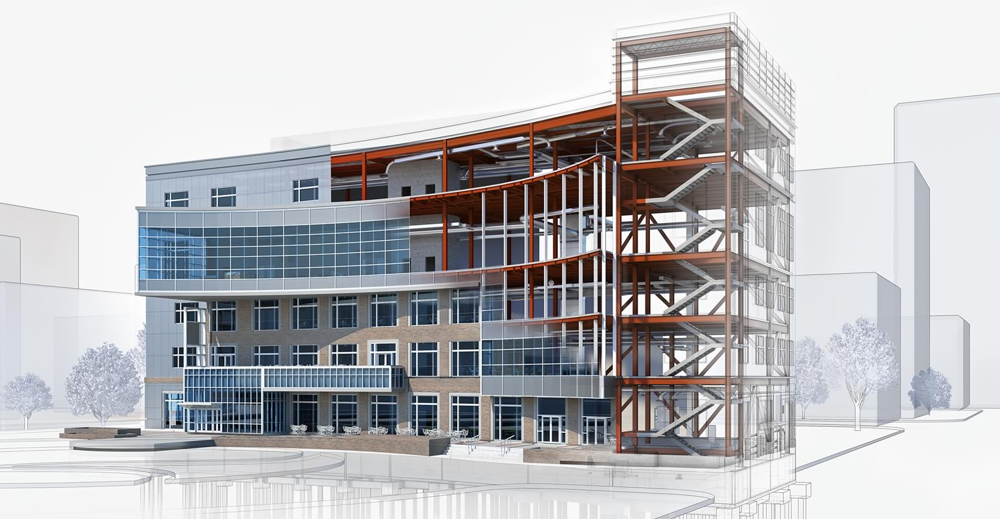

Azért alakultunk meg, hogy az építőipar támogatásában kompromisszum nélkül alkalmazzuk a jövő technológiáit, és az azokban való fejlődésre fókuszálhassuk energiáinkat.
Cégünk megalapításával így olyan munkahelyet hoztunk létre ahol az építőipar jelenének és jövőjének igényei, a szakmai lelkesedés és az emberközpontú szervezeti kultúra találkozhatnak. Utóbbira kiemelkedű hangsúlyt fektetünk, mert hiszünk abban, hogy kimagasló minőségű végeredményt is csak úgy adhatunk hosszú távon, ha nem kötünk kompromisszumot a munkahely emberközpontúságában és a kiválóságot munkavállalóink ambícióinak és képességeinek támogatásával érhetjük el.